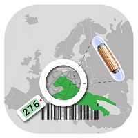
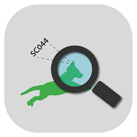
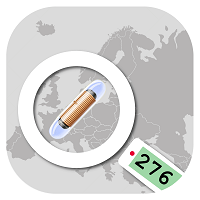

Search function:
Search chip code: worldwide
Search by tattoo: within ifta
Search by ID: within ifta
Search by chip code:

To save and start the search, type the 15-digit transponder code in the first line and click on the search button. If you click on the save button, the chip will be saved as well, but the search has not (yet) been launched.
Result:
All the searched data bases will be listed. If the pet is registered with ifta, the result will be displayed in green at the top of the page. If the pet has been registered with another database, you can demand further information by clicking on it.
Search by tattoo:

To start the search, type the entire tattoo or legible parts of the left, right or both ears in the search box and click on the search button. If you click on the save button, the tattoo will be saved as well, but the search has not (yet) been launched.
Result:
The result will be displayed in a table. Click on an entry to receive further information about the pet.
Search by ID:

To save and start the search, type the eight-digit ifta-ID in the search box and click on the search button. If you click on the save button, the ifta-ID will be saved as well, but the search has not (yet) been launched.
Result:
The result will directly be displayed.
Advice:
In case of mediation between finder and pet owner (e.g. animal shelter, firemen, police etc.) you can leave two phone numbers of the finder and a commentary the boxes further down, to specify for example the place of finding or further information.
Chip analysis:

Type in the 15-digit transponder code. You can then see from which country and producer the chip originates.
Pet registration:

Register your pet with your smartphone/table directly with ifta. Veterinarians may enter their customer reference number as usual.
Log-In:

Not-registered users have access to all of the animal data and the pet owners’ phone numbers. Centers for registration may log in with their known access information to receive all information available about the pet owners.
Search history:

Every search that has been saved with the save button or saved and launched with the search button, will be listed in the search history. Empty boxes stand for no data being available. After clicking on an entry the menu will open.
Edit entries:
Finders’ phone numbers and commentaries can be edited.
Change status:
Change the status of your search. For example, if you could not get hold of the pet owner, you can note “return call“.
Calls (box 3 to 7):
Call the pet owner or the finder directly. If the box is empty, there is no phone number available.
Launch search:
The search will be restarted with the corresponding query.
Delete entry:
The entry will be deleted (e.g. if the case has resolve).